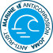

Finition Marine · C5-M
Le système anticorrosion de Joma pour le littoral et les milieux salins : prétraitement par immersion, cataphorèse, primaire et couche de finition en peinture poudre. Classe C5-M selon EN ISO 12944.
- Peinture poudre
- Primaire
- Cataphorèse
- Acier
Brouillard salin UNE-EN ISO 9227 : 1 000 heures